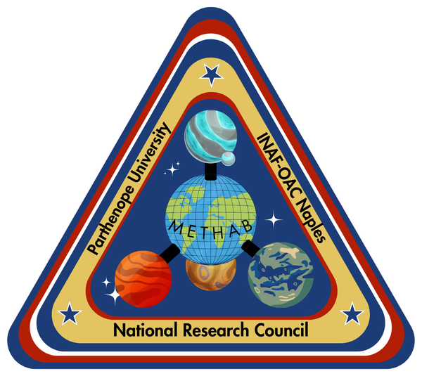
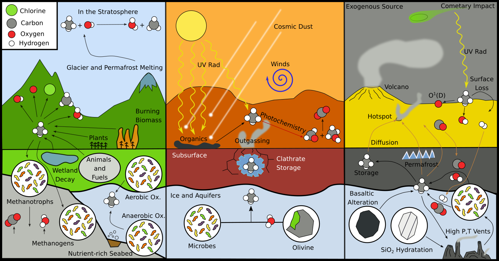

Methane and habitability: microbial insights from extreme terrestrial environments and planetary analogs
↓Methane (CH₄) is one of the simplest molecules in the Universe and one of the most important for astrobiology. On Earth, most methane is produced by microorganisms, and it has been detected on Mars, on Titan and in the atmospheres of many planets and exoplanets. Where there is methane, liquid water and energy, life could be possible.
METHAB studies the microorganisms that produce and consume methane in extreme environments on Earth, and tests how they behave under conditions that recreate Mars and the icy moons. The goal is to better distinguish biological from geological methane and to support methane detection in future space missions.
Methanogenic Archaea produce most of Earth's methane in oxygen-free sediments and waters, while methanotrophs use it as an energy source.
Martian methane is mainly linked to water–rock reactions and subsurface clathrates. A microbial contribution remains possible but unconfirmed.
Titan has a full methane cycle — clouds, rain, lakes and seas — driven by cryovolcanism and atmospheric chemistry in an oxygen-poor environment.

National Research Council of Italy — project coordination, field sampling, geochemistry and microbial ecology.
€250K
Planetary simulation experiments under Mars-like and Titan-like conditions.
€100K
Spectroscopy, biosignatures and links with space missions; outreach and dissemination.
€150K